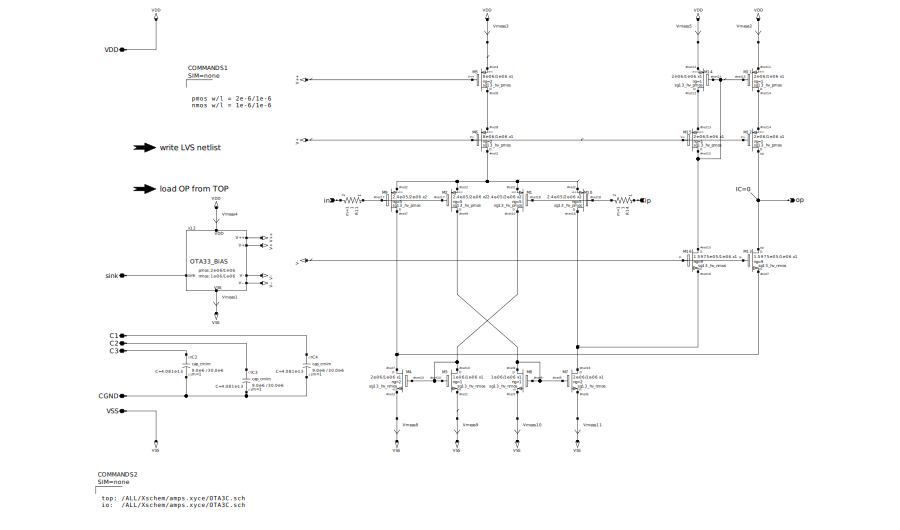
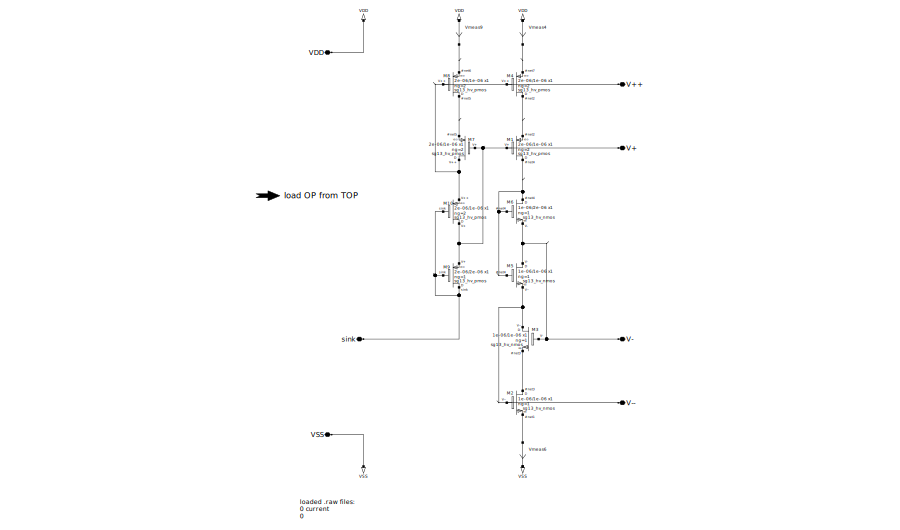
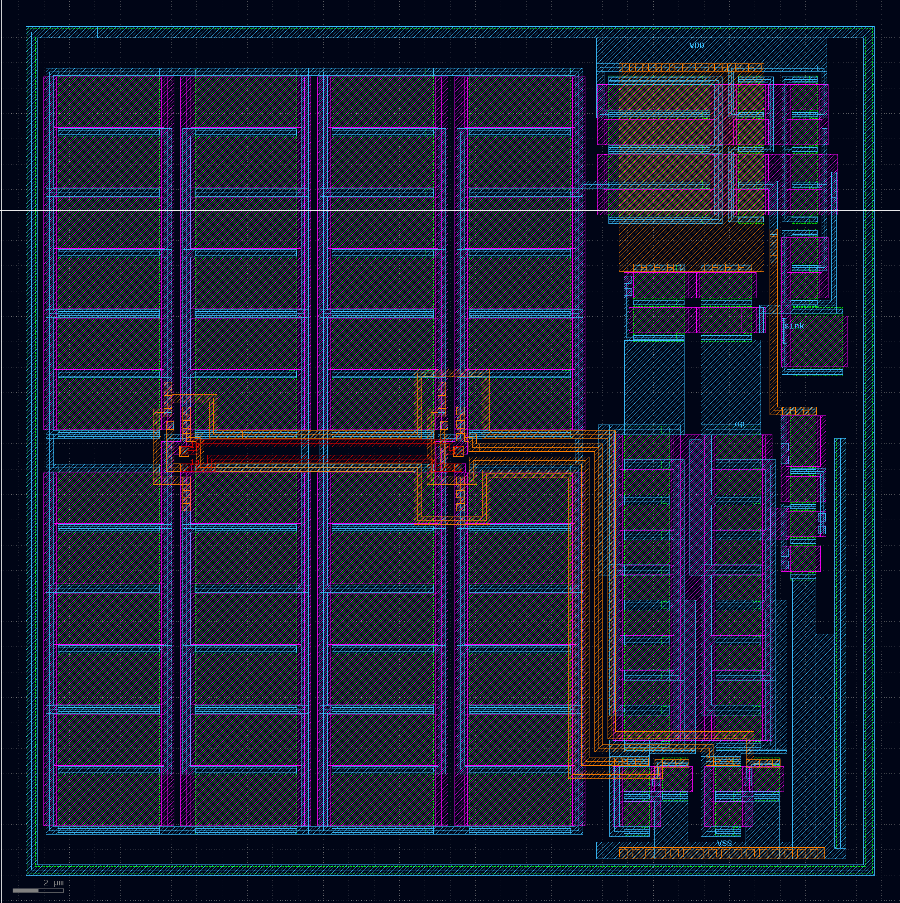

high voltage OTA
1.1. the OTA
the circuit should be used with iHPs PNP-device pnpMPA, so it should be working from VSS. this called for an PMOS input. the design is a simplified version of
The Recycling Folded Cascode: A General
Enhancement of the Folded Cascode Amplifier
because of the used CMOS-process the PMOS transistors could have an isolated bulk, without special effort. the simulations showed that the isolated versions had a bigger gain, but a smaller common-mode-range, and i preferred the later. the bias-current is programmable an so also the band-width. the bias-voltages should allow wide-swing output voltages. in the space the circuit uses are 3 MiM-capacitors placed. they are intended to use for frequency-compensation or as power-rail decoupling.
OTA
bias generator
layout
simulations
using different bias-currents of 1, 3 and 10µA a few simulations are printed into a PDF that allow to see the gain, common-mode-range, bandwidth and a slew-rate:
PDF with Xyce simulations .ac .dc .trans
the schematics of this simulations is Xschem document
ETHZ feedback
its a bit stupid to design OTAs that fit in a square, if there is no such space-requirement. the layout should be changed to minimize the conductor-length of the signals between the differential-stage and the current-mirrors.